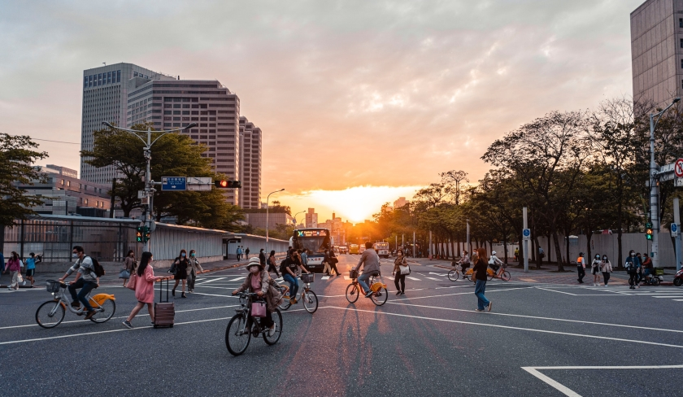
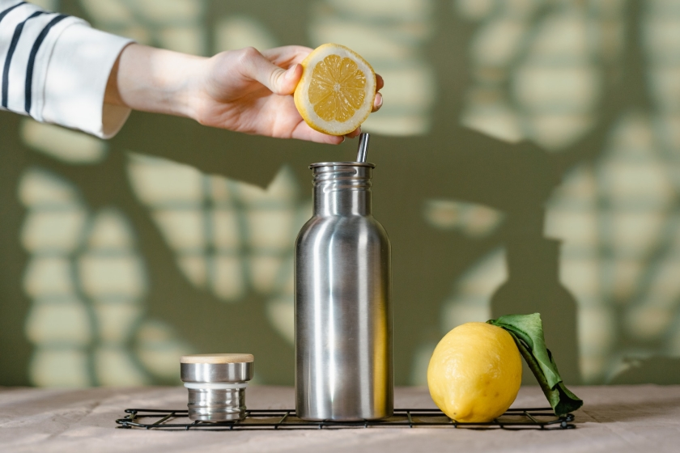

To Know About
Local Sustainability Initiatives :-
Few tips for living sustainably
1. Food - Choose green, plant-base options
Opting for plant-based diets when possible is the most effective way to reduce the wide-ranging impacts of food consumption. Agricultural expansion is driving almost 90 per cent of global deforestation, while some 25 per cent of the global land surface is used for grazing livestock. This threatens biodiversity and ecosystem services, which provide shelter to local communities, medicine, recreational and spiritual benefits, and economic opportunities. Swapping to a more vegetable-friendly diet can improve one's health, lower greenhouse gas emissions and reduce biodiversity loss.
2. Travel - Avoid short automobile trip
Approximately 95 per cent of the world's transport is still fossil-fuel-powered and the transport sector directly accounts for 23 per cent of global energy-related carbon dioxide emissions. Using public or shared transport, or even better, walking and cycling, can help reduce emissions and air pollution. It can also encourage a shift in the way planners design cities.
3. Housing-Make simple changes at home and work
Buildings account for 21 per cent of total greenhouse gas emissions, primarily due to electricity, heating and cooling. Simple actions in households and offices can reduce energy needs. This includes using natural light, changing clothes instead of relying on heating or cooling, and shifting to more sustainable furnishings and energy-efficient appliances.
4. shopping- Think before buying
Humanity produces 2.24 billion tonnes of municipal solid waste annually, of which only 55 per cent is managed in controlled facilities, according to the World Bank. In this era of overconsumption, experts say consumers must change shopping patterns to consider what they need, prioritize products that last longer, and opt for sharing and repairing goods - while still ensuring people can meet their basic needs. These practices can reduce the use of high-footprint materials like plastics, paper and textiles, reducing waste and associated emissions.
5. Leisure - Rediscover local attractions
How people spend their leisure time - including on tourism and recreational activities - significantly impacts the environment. Individuals can make impactful actions to shift to more sustainable leisure activities by staying local and supporting nearby businesses. The tourism sector accounts for around 8 per cent of all emissions. When travelling a long distance, experts suggest extending stays, eating local and avoiding disposables in favour of reusable products, including utensils.